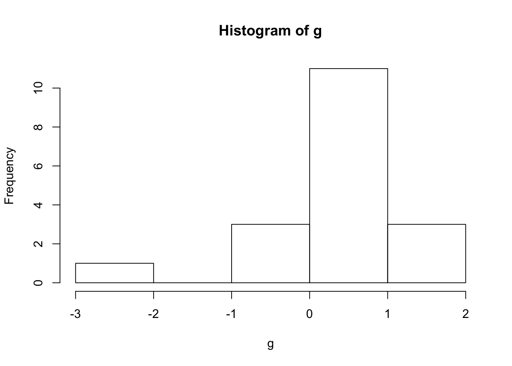

a <- 1
b <- "hello world"
d <- "3" #using "" makes it a character instead of number
class(a) #class tells me what kind of variable im working with## [1] "numeric"class(d)## [1] "character"vector <- c(1,2,3,4,5,6,7,4,6,7,8,5,3,3,2,8) #vector is what we store
#process of indentifying whats in a certain spot is indexing. #vector[7] shows us what is in the position 8
vector[2:8] #finds the 2-8 positions## [1] 2 3 4 5 6 7 4vector [c(10,10,10,10,10,10)] #printing out things in position 10 six times## [1] 7 7 7 7 7 7vector[c(1,2,3,3,2,1)]## [1] 1 2 3 3 2 1vector <- c(1,2,3,4,5,6,7,4,6,7,8,5,3,3,2,8,1000) #note the large inaccuarate number
vector[vector > 7]#only shows numbers that are greater than 7, to elimnate the 1000 insert vector[vector < 7]## [1] 8 8 1000vector[vector < 7] #adding >= means greater than or equal to? ## [1] 1 2 3 4 5 6 4 6 5 3 3 2vector[vector == 5] #[==] in a row asks is it equal to?## [1] 5 5vector[vector != 5] #[!=] means ## [1] 1 2 3 4 6 7 4 6 7 8 3 3 2 8
## [15] 1000vector [8] <- 2000 #adds a number to the vector position at a later date
vector [1:2] <- 10 #changes first two characters to 10
class(vector) #what is within the vector?## [1] "numeric"vector[7] <- "j" a <- c("1","2","3") # a is a character vectro with 3 characters in it
class(a) #asks what is in a?## [1] "character"b <- a
class(b)## [1] "character"as.numeric(b) #will try to change the charcters into numbers if they are actually numbers## [1] 1 2 3a <- "iurbgiuqrebguqrvniowenfoimxqwio"
strsplit(a,split="") #use this to split apart character strings## [[1]]
## [1] "i" "u" "r" "b" "g" "i" "u" "q" "r" "e" "b" "g" "u" "q" "r" "v" "n"
## [18] "i" "o" "w" "e" "n" "f" "o" "i" "m" "x" "q" "w" "i" "o"b <- strsplit(a,split="") #
b[[1]][5] #b is a list, access the first list [[1]], turns out the first list is a character vector, [5] access this 5th thing which is a character vector ## [1] "g"class(b)## [1] "list" #when you have a bunch of strings/variables, write a loop that goes through each string and pulls what you want. vectorized operations does this. if you had paragrahs and you want to see what was in each, strsplit will give you results by each paragraph.
b <- unlist(strsplit(a,split=""))
b[5]## [1] "g"example_list <- list(a=1, b=4, d=c(1,2,3,4))
example_list[[1]] #[[1]]return whats in list one, used to pull whats from different lists## [1] 1g <- matrix(0,nrow=5, ncol=3)
View(g)## Warning in View(g): unable to open display## Error in .External2(C_dataviewer, x, title): unable to start data viewerdata.frame() #essentially an excel spreadsheet, if i can get my data into this format all of r will run. ## data frame with 0 columns and 0 rowsfirst_names <- c("asdasas", "fwefef", "sfweg")
ages <- c(2,7,9)
grades <- c(89, 56, 99)
#put into the data frame each variable
everybody <- data.frame(first_names,
ages,
grades)
View(everybody)## Warning in View(everybody): unable to open display## Error in .External2(C_dataviewer, x, title): unable to start data viewereverybody$ages[2] #gets the second thing in the column## [1] 7a<-"couting the letters in cats and dogs"
table(unlist(strsplit(a,split="")))##
## a c d e g h i l n o r s t u
## 6 2 2 2 3 2 1 2 1 3 2 1 3 5 1#without using table
numbers <- c(1,2,3,4,5)
letters <- c("a","b","c","d","e")
new_df <- data.frame(numbers,letters)#storing variables into data frame
print(new_df)## numbers letters
## 1 1 a
## 2 2 b
## 3 3 c
## 4 4 d
## 5 5 enew_df$numbers #access individual columns of dataframe## [1] 1 2 3 4 5new_df$letters #access individual columns of dataframe## [1] a b c d e
## Levels: a b c d enames(new_df) #get names of data.frame## [1] "numbers" "letters"my_function <- function(x){
return(x+1)
} #create fnx to return something #(x)is the input
my_function(2)#(output)## [1] 3add_one <- function(x){
save_result <- x+1
return()
}add_one <- function(x) return(x+1)
add_one## function(x) return(x+1)sample(1:6,1) #use to get a single random number between 1:6 and 1 number increments## [1] 3roll_dice <- function(){
return(sample(1:6,1))
}
roll_dice()#run the fxn with no input## [1] 4#decalre a fxn
my_numbers <- c(1,4,3,4,5,6) #input will become x variable
my_sum <- function(x){
get_sum <- sum(x) #the sum of x is inside the variable get_sum for storage
return(get_sum) #return will show you what is inside the variable get_sum
}
#print->prints to the console for debugging #return->shows output of fxn
my_sum(1) #my_sum is the fxn #my_numbers is what needs to be done
b <- my_numberssome_numbers <- c(3,4,3,2)
ranged_mean2 <- function(x, min_val, max_val){
restricted_values <- x[x > min_val & x< max_val]
outputs <- list(original_values = x,
restricted_values = restricted_values, #names=data(contents)
restricted_mean = mean(restricted_values))#creating restricted values, then placing the mean of those values into it
return(outputs)
}g<-c(-.55,.07,1.95,1.32,.7,1.8,.07,-.55,.07,.07,.7,.07,-2.42,-.55,.7,.07,.07,.07)
hist(g) ##histogram with colors and ranges…
# Create data for the graph.
v <- c(3, 4, 7, 6, 5, 1, 4, 3, 4, 4, 5, 4, 0, 3, 5, 4, 4, 4)
# Give the chart file a name.
png(file = "histogram_lim_breaks.png")
# Create the histogram.
hist(v,xlab = "Weight",col = "green",border = "red", xlim = c(0,8), ylim = c(0,10),
breaks = 5)
# Save the file.
dev.off()## quartz_off_screen
## 2